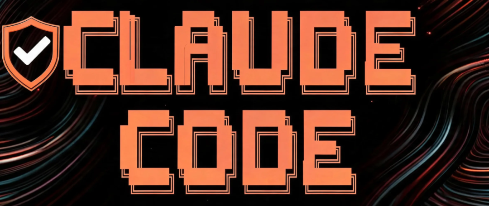

刚上手 Claude Code 那会儿，谁不觉得这玩意儿香？敲几行命令，代码唰唰就出来了，效率直接起飞。
但用上几周你就会发现，翻车的姿势远比你想象的丰富。今天这篇，就是一份浓缩了无数血泪的“作死指南”。原作者 Nick Babich 把自己和社区里踩过的坑全扒了出来，我也顺手补了点我自己亲身体会过的“工伤”。咱就当撸串时闲聊，把这 10 个雷区一个个排了。
1. “绕过权限”模式，千万别乱开
很多人一被 Claude 反复弹窗询问就烦了：“它怎么老问我这问我那？” 一怒之下，直接开启“绕过权限”模式，让 Claude 自己放手干。
说实话，这模式确实爽，几乎不用你点头，它就能执行任何操作。但坑就坑在——它再也不跟你打招呼了。你让它读个私钥、推个分支、改个生产配置，它二话不说就给你办了。
特别是下面这些场景：
• 不信任的第三方仓库（比如从 GitHub 上 fork 下来的项目） • 带敏感信息的项目（API 密钥、数据库密码） • CI/CD 脚本 • 任何跟 Git、凭据、包发布、云基础设施或生产数据有关的操作
啧，想想都后背发凉。
Claude UI 里可以直接勾选这个模式；命令行的参数是 --dangerously-skip-permissions。你看这名字，“dangerously”，官方已经把警告写在脸上了。
2. “Accept Edits” 模式并不安全
有人觉得“Accept Edits”比绕过权限安全，毕竟 Claude 至少会弹个框问问你同不同意改文件。但问题是，它默认自动批准对工作目录下文件的修改和一些特定的 Bash 命令。
如果你只是改几个函数参数，这个模式还行。但一旦涉及大重构、数据迁移，或者需要逐行审查修改内容，千万别用。等你反应过来它一口气改了 50 个文件，想回退都来不及。
3. 不主动禁止 Claude 读敏感文件，它真会去读
很多人以为 Claude 会“懂规矩”，自动避开 .env、密钥、证书这些敏感文件。这种想法要不得。它可没你想得那么聪明——你只要没说不许读，它默认就有权读。
最佳实践是直接在 claude-code-settings.json 里，用 permissions.deny 把这些文件路径挡掉：
{
"permissions": {
"deny": [
"Read(./.env)",
"Read(./.env.*)",
"Read(./secrets/**)",
"Read(./credentials/**)",
"Read(./*.pem)",
"Read(./*.key)",
"Read(./id_rsa)",
"Read(./id_ed25519)"
]
}
}搞定。这下就算你忘了口头嘱咐，它也不会偷偷去瞄那些文件。
4. 忘了限制它使用危险工具
同样，你还能禁止 Claude 使用某些 MCP（模型上下文协议）工具或执行特定命令。比如，就是不想让它把你的代码推到 Git 仓库。
直接在配置里加：
{
"permissions": {
"deny": [
"mcp__[MCP名字]",
"Bash(git push *)"
]
}
}这下它没法乱推了。但如果你忘了加这条，哪天手一滑，它可能就把你的“实验性爆改”直接推到主分支上去了。
5. 上来就开干，不做任何规划
做大改时，很多人上来就甩一句“帮我重构这个模块”，Claude 就开始吭哧吭哧写代码。结果呢？逻辑对不上，输出一团乱，你改来改去浪费好几次迭代，血压直接拉满。
更好的做法是先用 Plan 模式。让 Claude 先分析现有项目结构，理解上下文，然后给出一个执行方案。你看了方案觉得 OK，再让它动手。
说白了，凡事预则立，不预则废。尤其对架构变更、跨多文件重构、数据库迁移、设计系统更新这种大活儿，Plan 模式能直接帮你省掉一半的返工时间。
6. 把 CLAUDE.md 当成了安全策略
很多人以为在 CLAUDE.md 里写一句“不要读取密钥”，Claude 就会乖乖听话。别天真了，它只是个提示，不是强制规则。 Anthropic 的文档说得清清楚楚：CLAUDE.md 是给 Claude 提供上下文用的，不是强制执行的安全配置。
如果你想硬性禁止某些操作，得用 permissions 规则或者 PreToolUse hooks。比如写一个 bash 脚本，在 Claude 执行任何命令前先检查，如果匹配到危险命令就阻止。在 .claude/settings.json 里配置：
{
"hooks": {
"PreToolUse": [
{
"matcher": "Bash",
"hooks": [
{
"type": "command",
"command": "${CLAUDE_PROJECT_DIR}/.claude/hooks/block-dangerous-commands.sh"
}
]
}
]
}
}这里的 block-dangerous-commands.sh 是你自己写的拦截脚本，这比写在 CLAUDE.md 里的“不要 xxx”靠谱一万倍。
7. 把个人设置塞进了项目配置文件
.claude/settings.json 是用来跟团队共享项目级配置的。很多人上手不久，顺手就把自己本机的路径、API 密钥、个人偏好写进去了，还一股脑儿 commit 到仓库。
你确定想让全团队的 Claude 都用你本机的密钥去跑？肯定不想。
正确做法：settings.json 只放团队通用的行为设置；个人的覆盖写到 settings.local.json，这个文件会被 .gitignore 忽略，只有你自己能用。
8. 全局连了太多 MCP 服务器
MCP 是个好东西，让 Claude 能连外部服务和数据源，省得你自己写胶水代码。但问题是，每个活动的 MCP 服务器都会吃掉一部分上下文窗口。你一口气连上十个八个，Claude 的推理质量会肉眼可见地下降——上下文记不住，输出也开始乱七八糟。
别一上来就把所有 MCP 服务器挂上。 按需加载，只有当前工作流或子代理需要时才挂。Claude Code 允许子代理定义自己的 mcpServers，这样可以避免主对话窗口被这些工具噪声塞满。比如一个只用来做“浏览器测试”的子代理配置：
---
name: browser-tester
description: 在真实浏览器中测试产品流程
tools: Read, Grep, Glob
mcpServers:
- playwright:
type: stdio
command: npx
args: ["-y", "@playwright/mcp@latest"]
---这样只有在需要测浏览器时才启动 Playwright 的 MCP，不浪费上下文。
9. 给子代理的权限太大了
建子代理是为了自动化那些重复性操作，比如“审查代码”、“检查设计”、“读取文档”。但悲哀的是，这帮小家伙默认会继承主对话的所有工具权限——也就是说，你给主对话的“写文件、跑命令”能力，子代理照样可以拿过来用。
最离谱的案例：你建了个“资源研究员”子代理，结果它居然能改文件、执行 Bash 命令、访问所有 MCP 工具。 这你受得了吗？
正确的做法：用 tools 或 disallowedTools 显式限制每个子代理的能力。比如，一个只读的研究员：
---
name: safe-researcher
description: 只读型代码库研究员，不修改文件
tools: Read, Grep, Glob
---
你是一个只读研究员。检查代码库并总结发现。不要编辑、写入、删除或运行命令。好了，这下它只能看不能动了。
10. 滥用 additionalDirectories，导致权限范围失控
additionalDirectories 允许 Claude 访问工作目录之外的其他目录。对于 monorepo、共享 UI 组件库、文档文件夹等场景，这功能确实很实用。但如果你把它指向父目录、共享工作区，或者直接指向 ~/Documents —— 那 Claude 就能读到你的个人文件、私钥、笔记、甚至手机备份。这不就是打开了潘多拉的盒子吗？
错误示范：
{
"permissions": {
"additionalDirectories": [
"..",
"../..",
"~/Documents"
]
}
}正确做法：只加 Claude 真正需要的目录：
{
"permissions": {
"additionalDirectories": [
"../design-system-docs",
"../shared-ui-components"
]
}
}说到底，权限越小越安全。 别贪方便给 Claude 大开权限，否则哪天它给你来个“无意识泄露”，你哭都找不到地方。
说实话，Claude Code 是个好工具，但好工具用对了，效率翻倍；用错了，你就准备好 debug 到怀疑人生吧。希望能帮你少走些弯路。